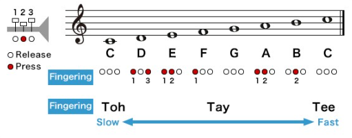
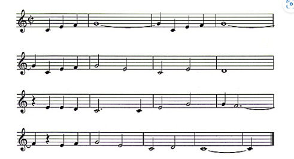

Before trumpets came along people will use sea shells or animal horns to make different sounds. Then around 1500 BC with craftsmenship humans began ot create trumpets with wood,metal and ceramic material. These ancient trumpets have been discovered all over the world. In places like China, South America, Scandinavia, Asia, and Egypt.
The trumpets we have today came about the 1800s with a Austrian trumpeter named Anton Weidlinger, when he had created a new design for the trumpet that used holes and keys similar to the clarinet and flute. That are able to change the trumpets pitch unlocking a new range of notes that can be played. This breakthrough made it difficult to tune the instrument so they then switched to valves which redirected air into different tubings. which was created in 1820. This finally made the trumpet main stream and added to many ensambles and orchestras.
In this portion you learn the basics of playing the trumpet. The trumpet comes with a mouthpiece that you
are to create vibrations and air that travel through the instrument.
You are to place your lips at the center of the mouthpiece, then you are to take a deep breath and
steadily exhale through your lips that are slightly closed. If you are hearing a honking noise great.
Now you are ready to hold the trumpet. To hold the trumpet you are to use your left hand and hold the
trumpet below the valves and your right hand is on the top part of the trumpet with your index, middle
and ring finger on all 3 valves.
Next there are 3 types of sounds you can make with a trumpet. The toh sound which is a low C and tay
sound wihc creates a G and a tee sound which makes a High C sound. Beware higher pitched sounds need
alot more air production so make sure you take deep big breaths.
Now you have learned the blowing technique, now we are going to learn the fingering.
The scale that is used most common is the C scale for trumpets. This involves using the 3 different mouth
techniques from before in combination with the fingering.
After you have gotten the hang of it you can now try playing the song "When The Saints Go Marching In".


Now here is some more music you can us to practice your muscle for your mouth and fingers so you can produce the same sound again and again. The song you are going to play is Hot crossed buns and London Bridge is falling down.